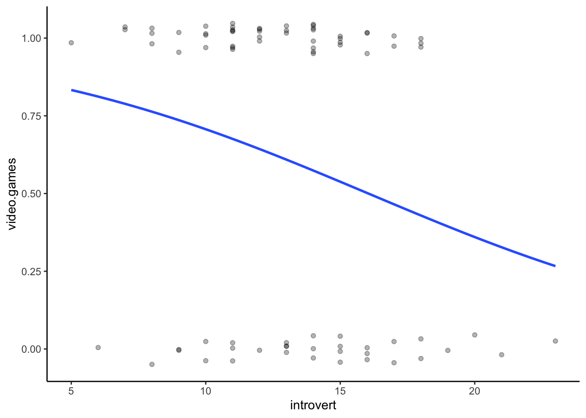

This page contains extra R content not covered in the demonstrations and could be considered supplementary to the module. This content is useful for completing the advanced exercises from Week 6 and focuses on conducting logistic regression in R. Logistic regression is typically used when the DV is categorical with one or more continuous IV.
A logistic regression is used when you have a categorical DV and a
continuous IV. The most simple scenario is when the DV is binary (i.e.,
only has two categories). The two categories of the DV coded as
0 and 1.
To conduct a logistic regression in R, you can use the
glm() function. In this instance, ‘glm’ stands for
Generalised Linear Model, and can be used for many different types of
analysis. Like most analysis functions, the glm() function
accepts a formula and a data.frame. We also need to tell the function
which type of analysis to conduct. This is done via the
family argument. To conduct a binomial logistic regression,
we set this argument to “binomial”. Much like with the lm()
function, to view the results in an interpretable way you must use the
summary() function.
Altogether, this becomes:
#The DV must be a categorical variable with two levels.
model <- glm(DV ~ IV,data = data,family = "binomial")
summary(model)Let’s look an example using the class data. Let’s say that you
predict that people who are more introverted are more likely to play
videogames than not. A logistic regression is appropriate because you
have a continuous IV (introversion score) and a categorical DV
(videogamer vs. non-videogamer). Importantly, the two groups for the
outcome variable must be coded as 0 and 1. We
can use the ifelse() function inside a
mutate() function to achieve this. You can also do this by
changing the variable class to a factor.
First, let’s prepare the data by calculating the necessary scores. We
have also loaded the necessary packages, being
tidyverse.
library(tidyverse)
analysis.data <- data %>%
mutate( introvert = introversion2 + introversion5 + introversion7 + introversion8 + introversion10,
video.games = ifelse(video.games == "Yes",1,0)) %>%
select(introvert,video.games)Following the example above, we can use the glm()
function to conduct the logistic regression.
model <- glm(video.games ~ introvert,data = analysis.data,family = "binomial")
summary(model)##
## Call:
## glm(formula = video.games ~ introvert, family = "binomial", data = analysis.data)
##
## Coefficients:
## Estimate Std. Error z value Pr(>|z|)
## (Intercept) -0.90482 0.89630 -1.01 0.313
## introvert 0.03462 0.05672 0.61 0.542
##
## (Dispersion parameter for binomial family taken to be 1)
##
## Null deviance: 162.30 on 119 degrees of freedom
## Residual deviance: 161.93 on 118 degrees of freedom
## AIC: 165.93
##
## Number of Fisher Scoring iterations: 4Much like with a standard regression, you get statistics about
overall model performance, as well as statistics for each individual
predictor. Similarly, you are expected to report both for a logistic
regression. For the statistics for each predictor, however, there is not
one standard way to report a logistic regression. Some people choose to
report the unstandardised coefficients, z-statistic, and associated
p-values as given in the summary() function. Others choose
to convert these to odds-ratios and report 95% confidence intervals. You
can use the following code if you want to convert the coefficients to
odds-ratios.
exp(cbind(OR = coef(model), confint(model)))## OR 2.5 % 97.5 %
## (Intercept) 0.4046137 0.06734982 2.314671
## introvert 1.0352217 0.92637143 1.158811To visualise a logistic regression, we can plot the probabilities. To
do this, we can use the geom_jitter() and
geom_smooth() functions, similar to with a standard
regression.
How to read the graph below is the line represents the probability of being in one of the two groups (0 = non-videogamers, 1 = videogamers) for each level of the variable on the x-axis (introversion). If there is a strong relationship, then the logistic regression line should have a very characteristic “S” shape. If there is no relationship, the logistic regression line will look quite straight. Note that since participants can only be in one of two groups, all the points will either be at the top, or bottom of the y-axis.
There are a few things to note: 1), I have adjusted the
height, width and alpha
aesthetics in the geom_jitter() function so it makes it a
bit easier to see all the individual points; and 2) we need to adjust
the method and method.arg arguments in the
geom_smooth() function to create a logistic regression
line.
ggplot(analysis.data,aes(x = introvert,y = video.games)) +
geom_jitter(height = .05,width = 0,alpha = .3) +
geom_smooth(method = "glm",method.args = list(family = "binomial"),se = FALSE) +
theme_classic()
If you would like to practice the skills on this page, weekly exercise questions on this content are available in the advanced exercises for Week 6. You can download the interactive exercises by clicking the link below.